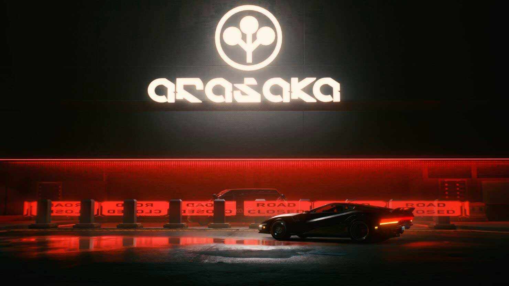

Night City
Mais uma Sexta-Feira
Em uma sexta-feira em Night City, a cidade ganha vida com neon e agitação. Pessoas buscam fugir da realidade em bares lotados, enquanto as megacorporações seguem impiedosamente com seus negócios. A noite oferece glamour, decadência, perigos e oportunidades fugazes, tornando cada sexta-feira eletrizante e imprevisível, onde sonhos e pesadelos se misturam em uma cidade futurista.
Modificação
Implantes
Em um cenário cyberpunk, como Night City, os implantes desempenham um papel fundamental na vida dos cidadãos. Os implantes, também conhecidos como ciberimplantes, são dispositivos tecnológicos inseridos no corpo humano para melhorar as habilidades, fornecer informações ou mesmo substituir partes do corpo.
Arasaka: Megacorporação japonesa influente com ampla influência em tecnologia, segurança e operações obscuras no mundo cyberpunk.
